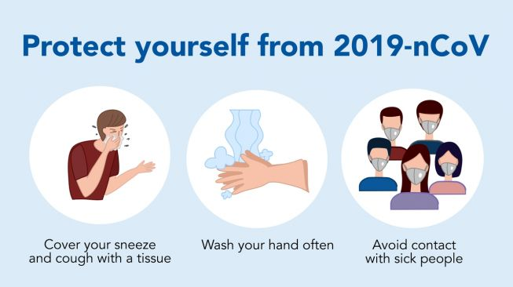

COVID 19
Infeksi virus ini disebut COVID-19 dan pertama kali ditemukan di kota Wuhan, Cina, pada akhir Desember 2019. Virus ini menular dengan cepat dan telah menyebar ke wilayah lain di Cina dan ke beberapa negara, termasuk Indonesia. Hal ini membuat beberapa negara di luar negeri menerapkan kebijakan untuk memberlakukan lockdown dalam rangka mencegah penyebaran virus Corona.
Coronavirus adalah kumpulan virus yang bisa menginfeksi sistem pernapasan. Pada banyak kasus, virus ini hanya menyebabkan infeksi pernapasan ringan, seperti flu. Namun, virus ini juga bisa menyebabkan infeksi pernapasan berat, seperti infeksi paru-paru (pneumonia), Middle-East Respiratory Syndrome (MERS), dan Severe Acute Respiratory Syndrome (SARS).
Gejala
Gejala awal infeksi virus Corona atau COVID-19 bisa berupa gejala flu, seperti demam, pilek, batuk kering, sakit tenggorokan, dan sakit kepala. Setelah itu, gejala bisa memberat. Pasien bisa mengalam demam tinggi, batuk berdahak bahkan berdarah, sesak napas, dan nyeri dada.
Gejala-gejala tersebut muncul ketika tubuh bereaksi melawan virus Corona.
Namun, secara umum ada 3 gejala umum yang bisa menandakan seseorang terinfeksi virus Corona, yaitu:
- Demam (suhu tubuh di atas 38 derajat Celsius)
- Batuk
- Sesak napas
Menurut penelitian, gejala COVID-19 muncul dalam waktu 2 hari sampai 2 minggu setelah terpapar virus Corona.
Diagnosis Virus Corona (COVID-19)
Untuk menentukan apakah pasien terinfeksi virus Corona, dokter akan menanyakan gejala yang dialami pasien. Dokter juga akan bertanya apakah pasien bepergian atau tinggal di daerah yang memiliki kasus infeksi virus Corona sebelum gejala muncul.
Guna memastikan diagnosis COVID-19, dokter akan melakukan pemeriksaan lanjutan berikut:
- Rapid test sebagai penyaring
- Tes usap tenggorokan untuk meneliti sampel dahak (tes PCR)
- Rontgen dada untuk mendeteksi infiltrat atau cairan di paru-paru
Penyebab
Infeksi virus Corona atau COVID-19 disebabkan oleh coronavirus, yaitu kelompok virus yang menginfeksi sistem pernapasan. Pada sebagian besar kasus, coronavirus hanya menyebabkan infeksi pernapasan ringan sampai sedang, seperti flu. Akan tetapi, virus ini juga bisa menyebabkan infeksi pernapasan berat, seperti pneumonia, Middle-East Respiratory Syndrome (MERS), dan Severe Acute Respiratory Syndrome (SARS).
Ada dugaan bahwa virus Corona awalnya ditularkan dari hewan ke manusia. Namun, kemudian diketahui bahwa virus Corona juga menular dari manusia ke manusia.
Seseorang dapat tertular COVID-19 melalui berbagai cara, yaitu:
- Tidak sengaja menghirup percikan ludah (droplet) yang keluar saat penderita COVID-19 batuk atau bersin
- Memegang mulut atau hidung tanpa mencuci tangan terlebih dulu setelah menyentuh benda yang terkena cipratan ludah penderita COVID-19
- Kontak jarak dekat dengan penderita COVID-19, misalnya bersentuhan atau berjabat tangan
Virus Corona dapat menginfeksi siapa saja, tetapi efeknya akan lebih berbahaya atau bahkan fatal bila terjadi pada orang lanjut usia, ibu hamil, orang yang memiliki penyakit tertentu, perokok, atau orang yang daya tahan tubuhnya lemah.
Pengobatan
Infeksi virus Corona atau COVID-19 belum bisa diobati, tetapi ada beberapa langkah yang dapat dilakukan dokter untuk meredakan gejalanya dan mencegah penyebaran virus, yaitu:
- Merujuk penderita COVID-19 untuk menjalani perawatan dan karatina di rumah sakit yang ditunjuk
- Memberikan obat pereda demam dan nyeri yang aman dan sesuai kondisi penderita
- Menganjurkan penderita COVID-19 untuk melakukan isolasi mandiri dan istirahat yang cukup
- Menganjurkan penderita COVID-19 untuk banyak minum air putih untuk menjaga kadar cairan tubuh
Komplikasi Virus Corona (COVID-19)
Pada kasus yang parah, infeksi virus Corona bisa menyebabkan beberapa komplikasi serius berikut ini:
- Pneumonia (infeksi paru-paru)
- Infeksi sekunder pada organ lain
- Gagal ginjal
- Acute cardiac injury
- Acute respiratory distress syndrome
- Kematian
Pencegahan

Sampai saat ini, belum ada vaksin untuk mencegah infeksi virus Corona atau COVID-19. Oleh sebab itu, cara pencegahan yang terbaik adalah dengan menghindari faktor-faktor yang bisa menyebabkan Anda terinfeksi virus ini, yaitu:
- Terapkan physical distancing, yaitu menjaga jarak minimal 1 meter dari orang lain, dan jangan dulu ke luar rumah kecuali ada keperluan mendesak.
- Gunakan masker saat beraktivitas di tempat umum atau keramaian.
- Rutin mencuci tangan dengan air dan sabun atau hand sanitizer yang mengandung alkohol minimal 60% setelah beraktivitas di luar rumah atau di tempat umum.
- Tingkatkan daya tahan tubuh dengan pola hidup sehat.
- Jangan menyentuh mata, mulut, dan hidung sebelum mencuci tangan.
- Hindari kontak dengan penderita atau orang yang dicurigai menderita COVID-19.
- Tutup mulut dan hidung dengan tisu saat batuk atau bersin, kemudian buang tisu ke tempat sampah.
- Hindari berdekatan dengan orang yang sedang sakit demam, batuk, atau pilek.
- Jaga kebersihan benda yang sering disentuh dan kebersihan lingkungan, termasuk kebersihan rumah.